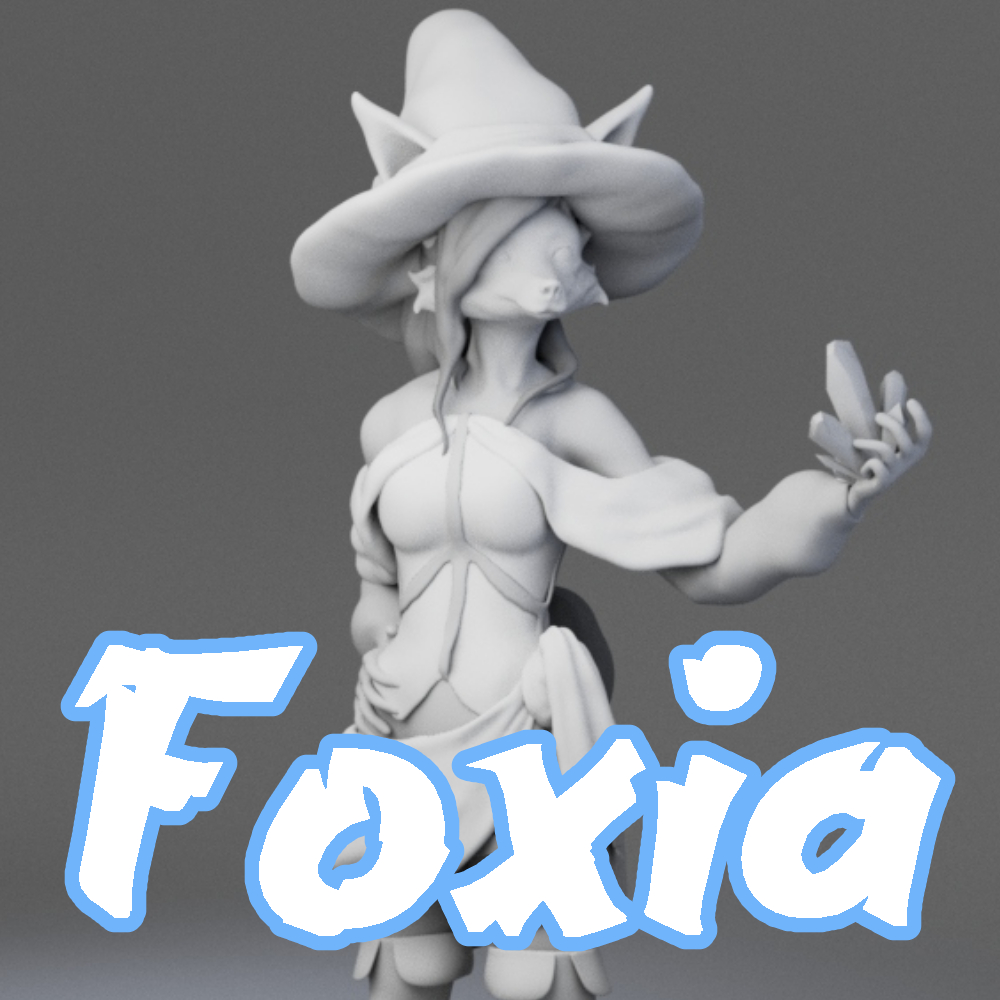
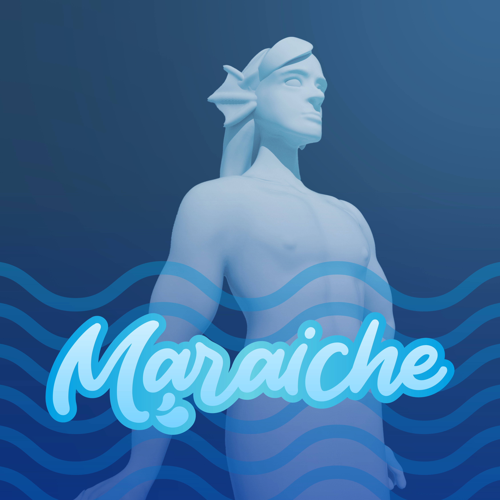
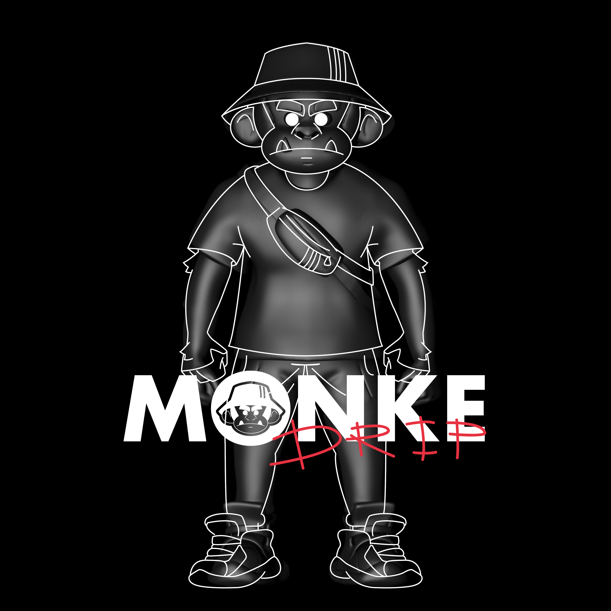
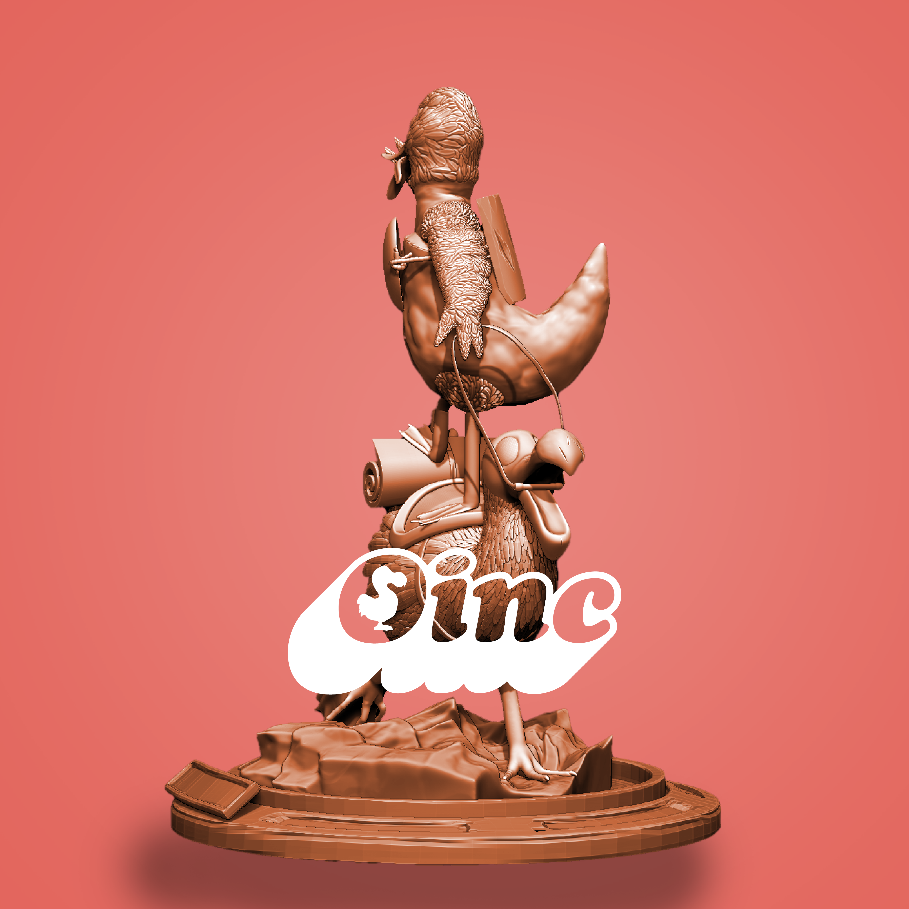
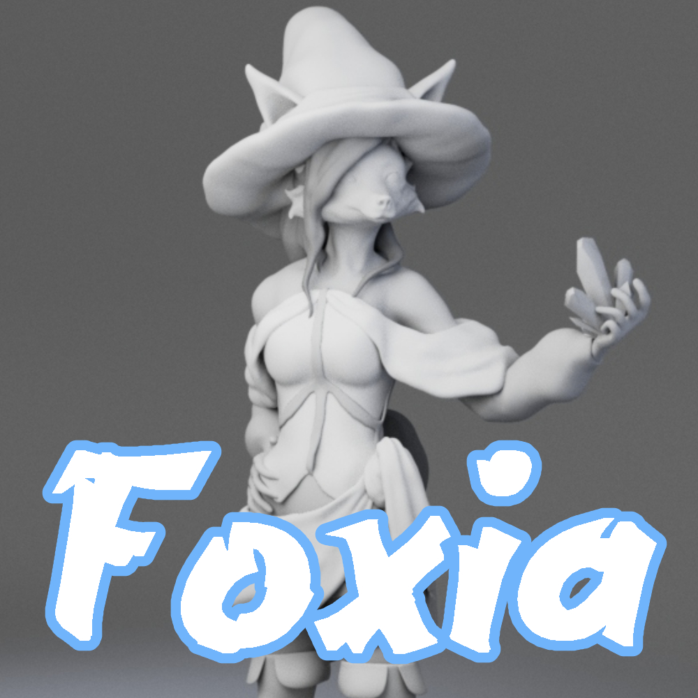
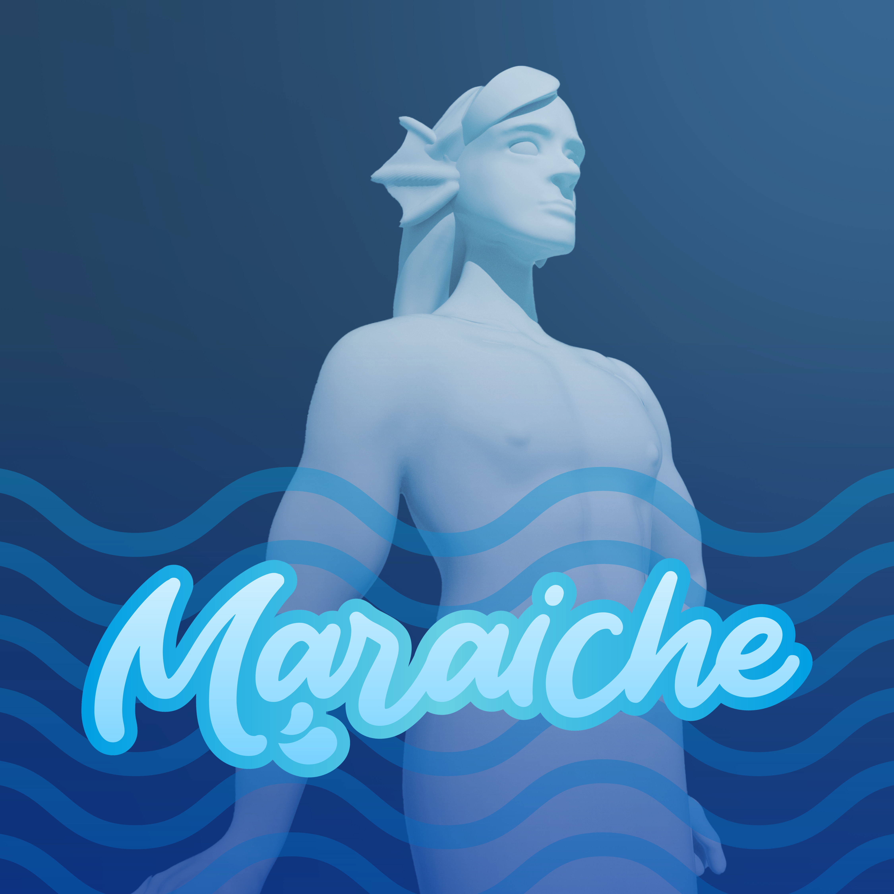
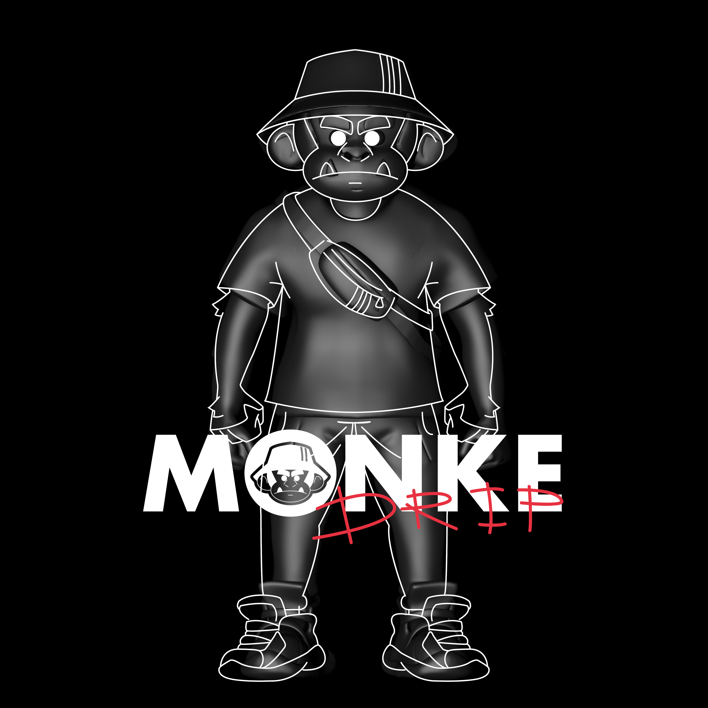
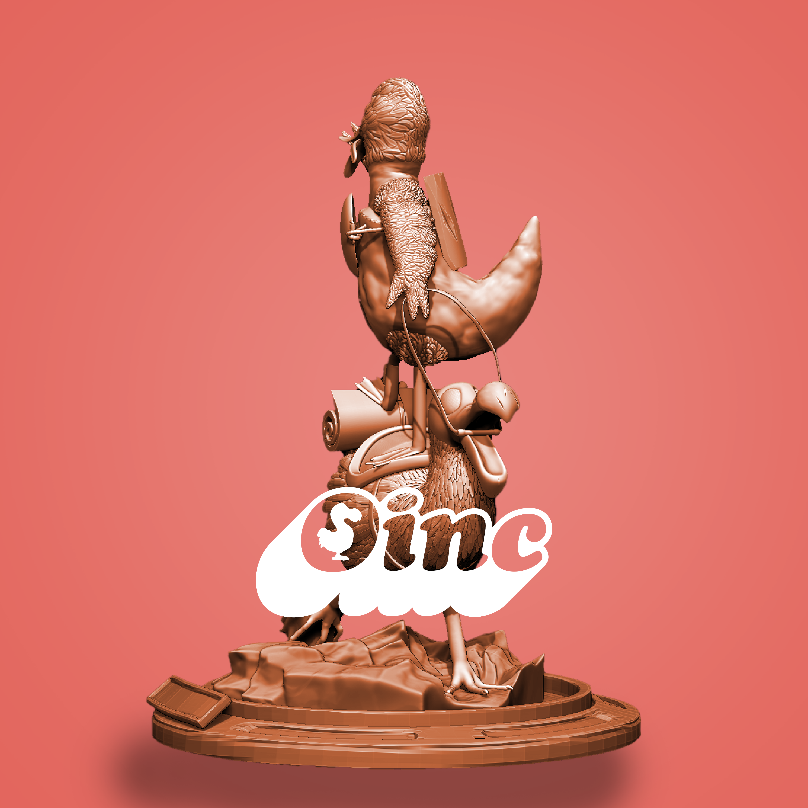

Y Detailed Figures
Le Projet Y Detailed Figures à été lancé en 2021 par un groupe de 7 étudiants.
L'objectif du projet est de modéliser des figurines en 3D pour les imprimer grâce à une imprimante 3D.
Y Detailed Figures s'inscrit dans le cadre des projet Ydays.
Les étudiants ont donc le temps d'une année
scolaire
pour
créer un concept art, le modéliser puis l'imprimer.
Projets
 



Voir tous les projets




Voir tous les projets
Modèles 3D
Les étudiants proposent en open source l'accès au fichier 3D de leurs figurines.
Vous pourrez prochainement
télécharger
les modèles 3D afin de les modifer ou de les imprimer.
arrow_upward